Experimental Setup
PushT (gym_pusht/PushT-v0) with state observations. The observation $o_t\in\mathbb R^5$ is the pusher position, the T position and the T angle. An action $a_t\in\mathbb R^2$ is the pixel position the pusher is driven toward. A policy outputs a chunk $A_t=[a_t,\dots,a_{t+7}]\in\mathbb R^{8\times 2}$ ($K=8$), the simulator executes all eight actions in order, and the policy is queried again from the newest observation. An episode stops the moment the simulator reports success (coverage > 95%) or the 300-step limit.
Every number on this page comes from the same protocol:
| Item | Choice |
|---|---|
| Demonstrations | 206 episodes, 25,650 steps; split by episode 80/20 with seed 0 → 165 train / 41 validation episodes |
| Normalization | mean/std of training episodes only, saved once and reused unchanged in Parts 1–3; predicted chunks are denormalized and clipped to $[0,512]^2$ |
| Networks | MLP, 3 hidden layers × 256, ReLU. MSE: 5 → 16 outputs. Flow: 5 + 16 + 1 = 22 → 16 outputs. (A width-128 pilot was clearly worse for flow matching.) |
| Training | Adam, lr 3×10−4, batch 128, 150k steps, seed 0, laptop CPU |
| Checkpoint choice | best mean validation-rollout score on reset seeds 0–49, evaluated every 5k steps |
| Final test | reset seeds 1000–1099 (100 episodes), never used for any choice; flow policy-noise seed = reset seed, plus two repeat passes with fresh noise seeds |
| Part 3 collection | reset seeds 2000–2024 × 2 recorded policy-noise seeds |
| Score | $R_e=\max_{t} r_{e,t}$ per episode, averaged over episodes (not the cumulative return). Success rate from info["is_success"] is reported separately. |
Starter code and credit
Parts 1–2 build on the UC Berkeley CS 185/285 (Spring 2026) Assignment 1 starter code. I kept its dataset download/loader, Normalizer, sliding-window chunk dataset, policy class skeleton and receding-horizon evaluation loop. I implemented both policies, their losses and the Euler sampler, the training loop, the episode-level split, validation-based checkpoint selection, seeded rollouts, rollout recording and all of Part 3. W&B logging was replaced by local CSV logs. Only the starter's data.py is imported as a module, unmodified. All other code, including the adapted pieces, is in the three project notebooks, with comments marking starter-derived logic. The code is submitted with the course deliverable and is not published on this site.
- MSE policy
- 0.575test score · 11% success
- Flow matching
- 0.840test score · 22% success
- Flow − MSE
- +0.2795% CI 0.17 to 0.36, paired
- Reward weighting, C − B
- −0.01395% CI −0.037 to +0.010
Part 1: MSE Policy Results
Task 1Prepare and inspect the demonstrations
| Train | Validation | |
|---|---|---|
| Episodes | 165 | 41 |
| Time steps | 20,684 | 4,966 |
| Valid chunks ($K=8$, inside one episode) | 19,529 | 4,679 |
| Observation tensor | [19529, 5] | [4679, 5] |
| Chunk tensor | [19529, 8, 2] | [4679, 8, 2] |
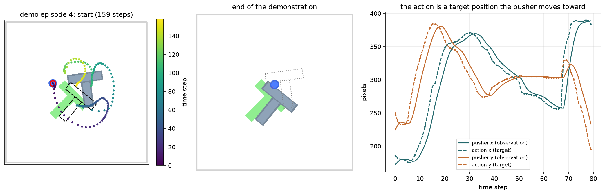
What one action means. $a_t=(x,y)$ is a target position in pixels. The simulator drives the pusher toward it, so the action leads the motion: $|a_t-p_{t+1}|$ averages 11.9 px against 19.8 px for $|a_t-p_t|$. A chunk is therefore a path of eight way-points, about 0.8 s at the 10 Hz control rate.
Why a chunk must not cross an episode boundary. The demonstrations are stored back to back. A window over the seam would pair the last state of one episode with actions from the next one, which starts from an unrelated T pose. The network would learn to "teleport" for reasons the observation cannot show. A naive sliding window would produce 1,435 such windows. The figure below shows how unphysical they are.
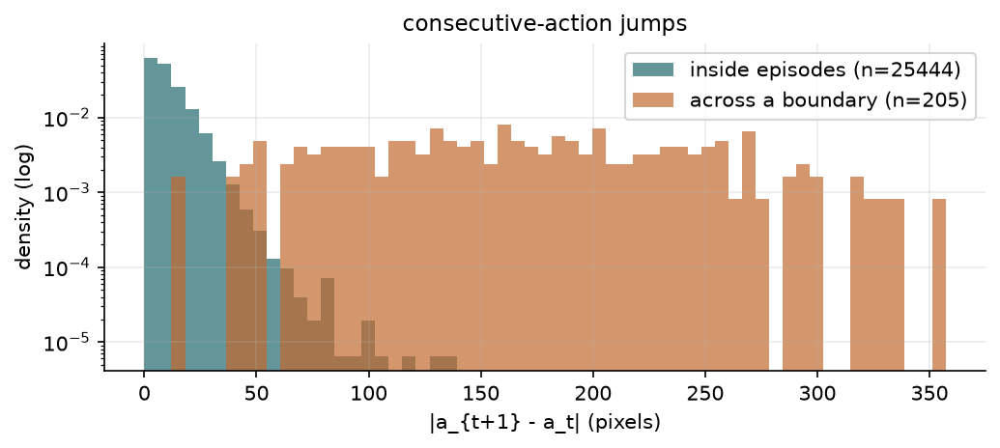
Task 2Implement and train the MSE policy
$f_\theta(o)\in\mathbb R^{K\times 2}$ predicts 16 numbers, reshaped to 8 actions, trained on normalized chunks with
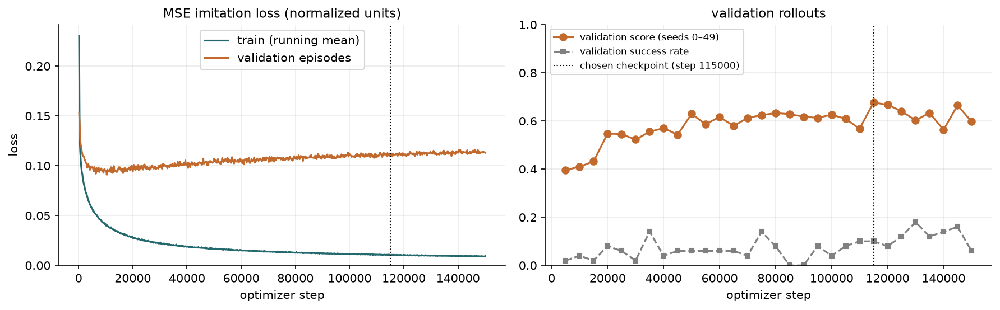
Conditional-mean behavior of MSE regression
For a fixed observation, $\mathbb E_{A\mid o}\|f-A\|^2$ is minimized by $f=\mathbb E[A\mid o]$. If one demonstrator went around the T clockwise and another counter-clockwise from nearly the same state, the loss-optimal answer lies between them, a path neither person would take. With a finite network, this pull acts over neighbourhoods of similar observations.
The figure picks the training observation whose 12 nearest neighbours (other episodes only) disagree most. The neighbour average itself (dashed) is a short curved path between the two groups that matches neither of them, which is the averaging risk in concrete form. The trained network, however, does not average here: its chunk lies 17.6 px from the closest expert chunk and 46 px from the neighbour average (dashed). A 137k-parameter net can separate nearby observations, and its training loss of 0.010 against a validation loss of 0.110 says it largely memorized them. Averaging is a tendency, not a guarantee. Whether it hurts has to be measured in the simulator.
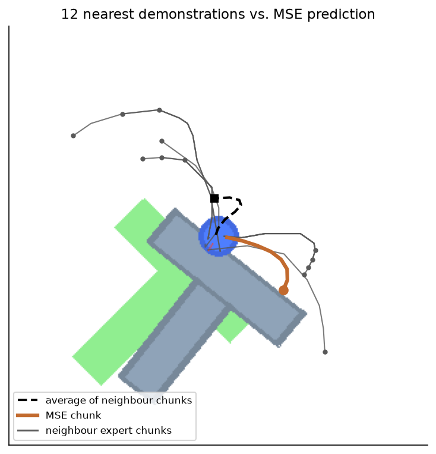
Task 3Evaluate the learned behavior
| MSE policy · test seeds 1000–1099 | Value |
|---|---|
| Score, mean ± std of $R_e$ | 0.575 ± 0.397 |
| Success rate | 11 / 100 |
| Median score · episodes ≥ 0.9 · episodes < 0.1 | 0.74 · 35 · 22 |
| Rollout runtime, 100 episodes (no rendering) | 7.7 s |
| Policy time per query | 0.11 ms |
| Training time (150k steps, CPU wall clock) | 180 s |
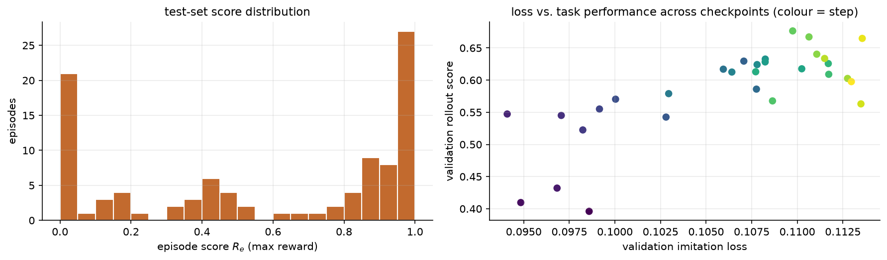
Rollouts (2× speed; blue pusher, gray T, green target, red cross = current action)

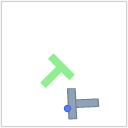
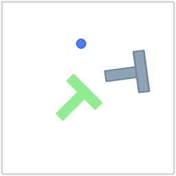
Imitation loss vs. task performance
Imitation loss is measured open loop on expert states: one prediction, one target, every coordinate weighted equally. The score is closed loop. Each executed chunk changes the state the next prediction sees, small errors push the system into configurations the demonstrators never visited, and those errors compound over ~37 queries. Pushing also has decisive moments. A 10 px miss at the moment of contact decides whether the T turns, while the same error in free space costs nothing. The loss cannot tell these apart, which is why the checkpoints kept improving as validation loss rose.
Observed failures were mostly getting stuck, not averaged motions cancelling out: dithering at a T corner (often near a wall) and, on unfamiliar starts, extrapolating out of the arena. MSE regression still performs reasonably here: 35 of 100 episodes reach ≥ 0.9 and 11 succeed.
Long exposure · 4th of July, Morgantown, WV
Part 2: Flow-Matching Policy Results
Same split, normalizer, $K$, network width/depth, optimizer and step budget as Part 1. Only the representation changes. Instead of predicting the chunk, the network predicts a velocity that carries Gaussian noise to a chunk.
Task 1Construct conditional flow-matching examples
so $\tau=0$ is noise and $\tau=1$ is an action chunk. The velocity network $v_\theta(o,A_\tau,\tau)$ reads $[o, A_\tau, \tau]$ (5 + 16 + 1 = 22 values) and outputs 16. All shape and endpoint checks pass:
- $A_\tau=\epsilon$ at $\tau=0$; $A_\tau=A$ at $\tau=1$; $A_{0.25}=0.75\epsilon+0.25A$.
- The target $u$ has shape
[B, 8, 2], the network input width is 22, and the output is[B, 8, 2]. - $A_{0.25}+0.75\,u=A$: following the target velocity for the remaining time lands exactly on the chunk.
sample_actions(state, num_steps, generator)takes only the observation. The clean chunk is never an input at sampling time.
Task 2Train the conditional velocity model
Fresh $\epsilon$ and $\tau$ are drawn every step. The training cost matches Part 1: 150k steps, batch 128, 141,584 parameters vs. 137,232. Measured CPU wall-clock training time was 444 s vs. 180 s, but these times depend heavily on background load (an earlier identical run measured 194 s vs. 272 s); the per-step cost of the two networks is essentially the same.

Task 3Generate action chunks and compare policies
At every query a fresh $Z_0\sim\mathcal N(0,I)$ is integrated with forward Euler while $o$ is held fixed:
These ten steps are network evaluations, not pushes. Only after $Z_N$ is denormalized and clipped does the pusher execute its eight actions. $K=8$ (actions per chunk) and $N=10$ (sampling steps) are separate knobs.
| Test seeds 1000–1099 | MSE (Part 1) | Flow, $N=10$ |
|---|---|---|
| Score, mean ± std of $R_e$ | 0.575 ± 0.397 | 0.840 ± 0.265 |
| Success rate | 11% | 22% |
| Median score | 0.74 | 0.96 |
| Episodes with $R_e<0.1$ | 22 | 4 |
| Repeat passes with new noise seeds (score / success) | deterministic | 0.837 / 20% · 0.870 / 27% |
| Policy time per query | 0.11 ms | 0.57 ms |
| Rollout runtime, 100 episodes | 7.7 s | 9.3 s |
On the same 100 seeds, flow − MSE = +0.265 (bootstrap 95% CI 0.174 to 0.356; sign-flip permutation p < 10−4). Flow wins 70 seeds, loses 25 and ties 5. The gap is about eight times larger than the 0.03 that the flow score moves between noise seeds. Sampling costs 10 network calls per query (about 5× the policy time), but physics dominates, so a whole rollout is only ~20% slower.
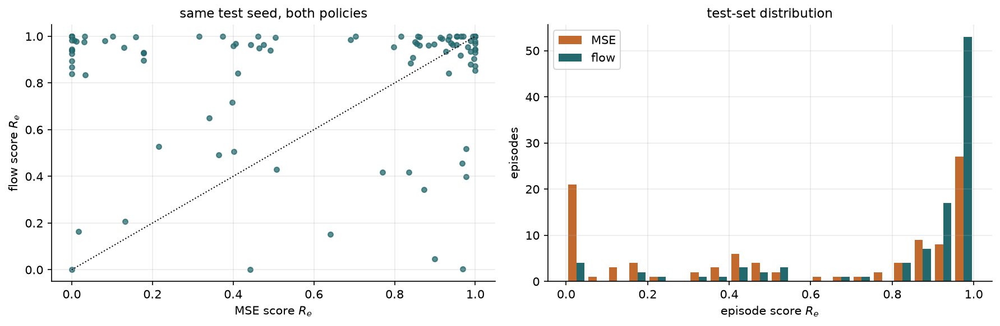
Effect of the number of integration steps $N$
Validation seeds only:
| $N$ | Val. score | Val. success | ms / query |
|---|---|---|---|
| 1 | 0.62 | 14% | 0.17 |
| 2 | 0.74 | 24% | 0.23 |
| 4 | 0.87 | 22% | 0.28 |
| 10 | 0.89* | 26% | 0.56 |
| 20 | 0.84 | 14% | 1.10 |
| 50 | 0.84 | 28% | 2.24 |
*Optimistic: the checkpoint was chosen at $N=10$ on these same seeds. A single Euler step from $\tau=0$ ideally returns $\mathbb E[A\mid o]$, because $v^*(o,z,0)=\mathbb E[A\mid o]-z$. That is the MSE answer, and the $N=1$ score lands right in the MSE policy's range.
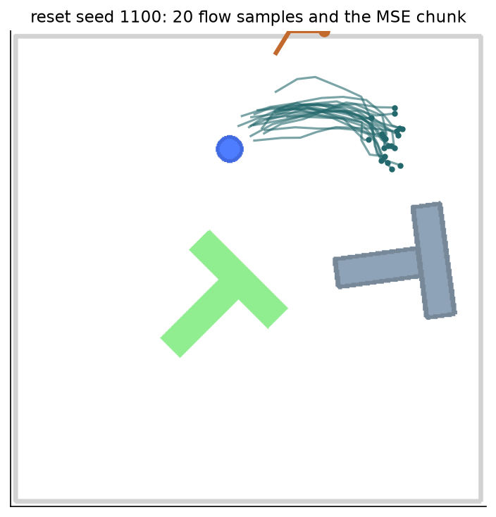
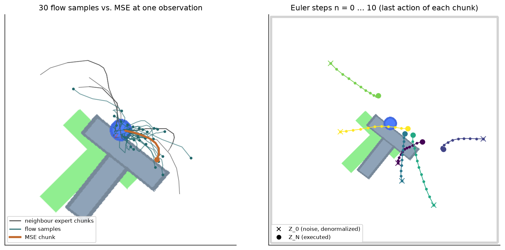
Flow rollouts (2× speed)
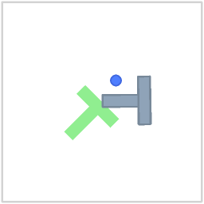
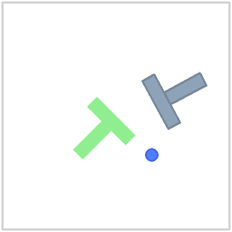
Part 2 checkpoint
The Part 2 checkpoint was chosen on validation only and saved unchanged as checkpoints/flow_policy.pt. Part 3 checks its SHA-256 before collecting any data.
Part 3: Reward-Weighted Fine-Tuning Results
Reward-weighted flow-matching regression, a classroom adaptation of reward-weighted policy improvement (motivated by Fan et al., ICLR 2025, Sec. 4.2). Three conditions start from the same checkpoint:
| Condition | Extra training | Purpose |
|---|---|---|
| A · Part 2, frozen | none | the starting policy |
| B · equal weights | collected chunks with $w_j=1$ (β = 0) + demo replay | controls for the new data and the extra training |
| C · reward weights | the same chunks with $w_j\propto\min(e^{2R},5)$ + the same replay and budget | adds only the weighting |
Task 1Collect rollouts and attach outcome feedback
The feedback comes from the simulator: after each action, env.step returns $r_t=\mathrm{clip}(\text{coverage}_t/0.95,0,1)$, with no labels, reward model or judge. The unchanged Part 2 policy ran 25 collection seeds (2000–2024, disjoint from validation and test) × 2 recorded noise seeds, without rendering, with $K=8$, $N=10$ and the standard 300-step limit. At every query I saved the starting observation and the actions actually executed (denormalized and clipped), plus the episode ID and both seeds. The incomplete last chunk of each episode was dropped from the dataset, but its rewards still count toward $R_e=\max_t r_{e,t}$, which is then attached to every retained chunk of that episode.
| Collection | Value |
|---|---|
| Episodes · environment steps · policy queries | 50 · 13,483 · 1,710 |
| Retained complete chunks $M$ (incomplete final chunks dropped) | 1,663 (47 dropped) |
| Collection wall time | 4.8 s |
| Episode score: mean ± std · median · min | 0.920 ± 0.163 · 0.973 · 0.074 |
| Success rate | 28% |
| Mean score gap between the two noise seeds of one reset seed | 0.106 |

Example collected tuple
Tuple #37 comes from episode 1 (reset seed 2000, policy seed 50001), query 0. It starts at $o=(144, 280, 152.4, 385.4, 3.31)$ and executes eight actions moving the pusher from (132, 283) to (109, 338). The reward was 0.051 for all 8 steps. The episode reached full coverage at step 163, so this chunk is labelled $R=1.0$ (the sum of rewards would have been 27.4). Every chunk in that episode gets the same credit, whether or not it helped.
Task 2Fine-tune with positive reward-based weights
The weights are computed once over all 1,663 chunks and held constant ($R=0.8\mapsto 4.95$, $R=0.2\mapsto 1.49$). Collected observations and executed actions are normalized with the frozen Part 2 statistics. Each update draws 64 collected chunks (uniform, with replacement) and 64 training demonstrations, fresh $\epsilon,\tau$, and a fresh Adam optimizer (lr 10−4) per branch. loss_demo is recomputed with the branch's current weights at every update. Each chunk's error is computed before its weight is applied:
per_chunk = (v_pred - v_target).square().flatten(1).mean(1) → loss_new = (w[idx] * per_chunk).mean()
B and C with the same fine-tuning seed draw identical minibatch indices, $\epsilon$ and $\tau$ from one shared generator seed, so the weights are the only difference. I ran three fine-tuning seeds.
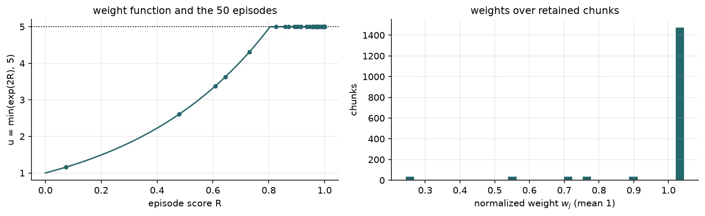
Budget, chosen on validation for both branches
A scores 0.888 on validation seeds 0–49. Averaged over the three fine-tuning seeds, B / C reach 0.876 / 0.879 after 300 updates, 0.829 / 0.825 after 1,000 and 0.834 / 0.841 after 3,000. I kept the default 300 updates for both.
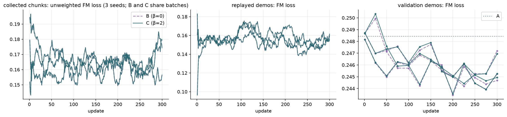
Task 3Compare, analyze and discuss
| Test seeds 1000–1099 | Score, mean ± std | Success |
|---|---|---|
| A · Part 2, frozen | 0.840 ± 0.265 | 22% |
| B · equal weights, ft seed 0 / 1 / 2 | 0.815 / 0.782 / 0.804 (± 0.30–0.33) | 22 / 14 / 16% |
| C · reward weights, ft seed 0 / 1 / 2 | 0.801 / 0.766 / 0.794 (± 0.30–0.34) | 21 / 19 / 14% |
| Paired contrast (same reset & noise seeds) | Mean diff. | 95% bootstrap CI | p (sign-flip) | Wins / ties / losses |
|---|---|---|---|---|
| C − B (3 ft seeds averaged) | −0.013 | −0.037 to +0.010 | 0.27 | 49 / 2 / 49 |
| per seed 0 / 1 / 2 | −0.013 / −0.016 / −0.010 | all include 0 | 0.53 / 0.46 / 0.56 | |
| C − A (3 ft seeds averaged) | −0.053 | −0.096 to −0.012 | 0.013 | 32 / 1 / 67 |
| B − A (3 ft seeds averaged) | −0.040 | −0.082 to +0.002 | 0.06 | 32 / 2 / 66 |
| Success rate, C − B per seed | −1 / +5 / −2 points | |||
Costs, reported separately: collection 50 episodes / 13,483 steps / 4.8 s. Fine-tuning 300 updates ≈ 0.5 s per branch (3.0 s for all six). The validation budget check took 140 s, almost all of it 900 validation episodes. For reference, Part 2 training took 444 s of CPU wall-clock time. Over all three noise passes (300 episodes per condition and seed) the picture is the same at a smaller scale: A 0.849, B 0.830–0.832, C 0.818–0.831.
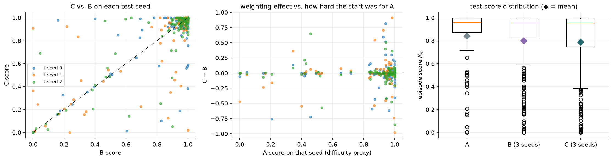
Policy change after fine-tuning
With identical starting noise on 2,000 validation observations, B and C shift the executed actions by about 5 px relative to A, while C differs from B by only 0.5 px. Yet B's and C's per-seed test scores differ from A's by 0.14 on average, and each branch has 9–15 seeds that drop by more than 0.3 and 5–7 that gain more than 0.3. In this contact-rich task, small action differences can change an episode's outcome, as the rollouts below show.
Seed 1082: the largest C − B gain (fine-tuning seed 0)


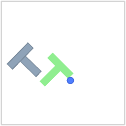
Seed 1083: the largest C − B loss

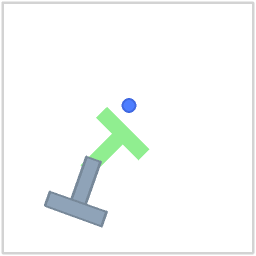
Illustration seed 1100

Conclusion
The evidence does not support the hypothesis. With this collection, β and cap, reward weighting produced no detectable improvement over the equal-weight control (C − B = −0.013, CI includes 0, all three fine-tuning seeds slightly negative). Fine-tuning on the policy's own rollouts, weighted or not, slightly hurt relative to leaving A alone (C − A = −0.053).
Discussion and limitations of episode scores
- Saturated weights. A already scored 0.92 on the collection seeds, so the capped exponential gave 89% of chunks the same weight. The experiment barely varied the quantity it was meant to test.
- Coarse credit. Each chunk inherits its episode's best moment, including the wandering before it and the over-pushing after it (tuple #37 above).
- Self-generated data. B and C regress onto A's own samples. They add no new behaviour but sharpen A toward its habits, mistakes included, while displacing half of each batch of demonstrations.
- Initial-state difficulty and luck. The collection seeds were easier than the test seeds (0.92 vs 0.84 for A), and two noise seeds on one start differ by 0.11 on average. An episode score mixes policy quality, start difficulty and chance, and a max-over-time score credits even a brief lucky overlap.
- Episode length. Failed episodes contribute ~37 chunks against ~24 for successes, so uniform chunk sampling leans toward failures: successes are 28% of episodes but 20% of chunks.
Scope. These conclusions rest on one Part 2 checkpoint (one training seed), three fine-tuning seeds and 100 test starts with three noise passes. This is an inconclusive-to-negative result for reward weighting at this scale, not evidence that reward-weighted flow matching cannot work. A sharper test needs a collection with real spread in outcomes (harder starts) or rank- or group-relative weights instead of a capped exponential.
Relation to PPO and GRPO
Like PPO and GRPO, this uses feedback from sampled behaviour to give better behaviour more influence. Unlike them, there is no critic, no group-relative advantage and no clipped probability-ratio objective: the positive episode weights simply rescale the existing flow-matching regression loss. The cap limits how much one example can pull on the loss. It is not PPO's ratio clipping, and the demo-replay term is not a KL constraint. The optional KL-regularized argument, $p^*\propto p_{\text{old}}\,e^{R/\eta}$, motivates the idea but gives no guarantee for this finite, capped, episode-level version, and the results above illustrate that.
Python 3.12.10, torch 2.15.0+cpu, gym-pusht 0.1.8, gymnasium 1.4.0, pymunk 6.11.1, on a laptop CPU with 4 torch threads. Seeds: split 0, training 0, fine-tuning 0/1/2, validation resets 0–49, test resets 1000–1099, collection resets 2000–2024, illustration reset 1100. Every rollout records its reset seed and policy-noise seed. Notebooks: part1.ipynb, part2.ipynb and part3.ipynb (roughly 5(about 7, 7 and 6 minutes end to end)ndash;12 minutes each end to end on a laptop CPU, depending on load). Checkpoints, the normalizer, the split, the collection dataset and all per-episode CSVs are included with the submitted code.
- UC Berkeley CS 185/285, Spring 2026, Assignment 1: Imitation Learning, starter code. github.com/berkeleydeeprlcourse/homework_spring2026/hw1
- Y. Lipman, R. T. Q. Chen, H. Ben-Hamu, M. Nickel, M. Le. Flow Matching for Generative Modeling. ICLR 2023.
- C. Chi, S. Feng, Y. Du, Z. Xu, E. Cousineau, B. Burchfiel, S. Song. Diffusion Policy: Visuomotor Policy Learning via Action Diffusion. RSS 2023. (Source of the PushT demonstrations.)
- J. Fan et al. Online Reward-Weighted Fine-Tuning of Flow Matching with Wasserstein Regularization. ICLR 2025, Sec. 4.2.
gym-pushtenvironment (Hugging Face LeRobot), reward $=\mathrm{clip}(\text{coverage}/0.95,0,1)$.